Trường Đại học Công nghệ Thông tin và Truyền thông
Đại học Thái Nguyên
Khoa Công nghệ Thông tin
Sinh viên: Nguyễn Văn Mạnh
Mã sinh viên: DTC245200147
Lớp: CNTTK23B
Học phần: Triển khai và Quản trị Hệ thống Phần mềm
Giảng viên: Nguyễn Anh Chuyên
Đề tài: Website Portfolio / Giới thiệu cá nhân
Môi trường: Windows, PowerShell, VS Code, Docker Desktop
Ngày kiểm tra: 08/10/2026 — Asia/Saigon
Ngày lập báo cáo: 08/10/2026
Hạn nộp: không quy định (sinh viên xác nhận)
Xây dựng và triển khai portfolio cá nhân có quản trị nội dung, database MySQL và phpMyAdmin; dùng Docker Compose và Nginx reverse proxy; cung cấp giám sát, log tập trung và hardening có thể kiểm tra lại.
| Nhóm | Yêu cầu |
|---|---|
| Ứng dụng | Giới thiệu, kỹ năng, dự án, liên hệ; có trang quản trị. |
| Triển khai | WordPress, MySQL, phpMyAdmin và Nginx bằng Docker Compose. |
| Monitoring | Prometheus + Grafana; metrics container, web server và database. |
| Logging | Loki + Promtail; access log thật, ba LogQL phù hợp dữ liệu. |
| Hardening | Ít nhất 3–4 biện pháp; bảo vệ credential và giữ dịch vụ chạy. |
| Hồ sơ | README, GitHub theo mã sinh viên, ít nhất ba commits thực, evidence, báo cáo ≥10 trang. |
Phạm vi công việc dựa trên hệ thống WordPress đã tồn tại. Nội dung portfolio và dữ liệu trong volumes được giữ khi hoàn thiện cấu hình. Triển khai security headers cơ bản; việc đáp ứng lựa chọn này trong đề cần đối chiếu phiếu đề bài gốc.
Đã xác thực root, WordPress admin, phpMyAdmin và Grafana; đã chụp ảnh giao diện, dashboard và logs. Lịch sử Git và repository được cập nhật ở phần 10. Ba mật khẩu MySQL user/root và Grafana đã đổi sang các giá trị ngẫu nhiên riêng biệt dài 48 ký tự, đạt chính sách tối thiểu 20 ký tự; cấu hình và dịch vụ đã đồng bộ.
Bảng yêu cầu được đối chiếu theo README và checklist của dự án. Phiếu đề bài gốc chưa được cung cấp trong workspace; cần đối chiếu lại trước khi nộp.
Workspace ban đầu không còn source, README, Compose hoặc Git. Các containers portfolio-manh vẫn chạy, nhãn working directory trỏ đúng workspace; Nginx trả 200 từ cấu hình trong bộ nhớ nhưng nginx -T lỗi do file bind mount bị mất.
Các trang Trang chủ, Kỹ năng, Dự án và Liên hệ còn trong WordPress/MySQL. Prometheus cũ có bốn jobs nhưng chưa có metrics container, Nginx stub_status hoặc MySQL. Collector cũ là Alloy, chưa đáp ứng yêu cầu Promtail.
Trình duyệt → Nginx → WordPress/Apache → MySQL phpMyAdmin → MySQL cAdvisor / nginx-exporter / mysqld-exporter → Prometheus → Grafana Blackbox → kiểm tra HTTP website → Prometheus → Grafana Nginx access.json → Promtail → Loki → Grafana
Mạng internal application/database/monitoring tách lưu lượng dịch vụ. WordPress có mạng outbound cho cập nhật; các giao diện quản trị bind localhost.
Database/WordPress/Grafana/Prometheus/Loki dùng named volumes đã có. Bản sao SQL trước thay đổi lưu riêng tư; WXR và uploads đưa vào source. Không reset dữ liệu để dựng lại cấu hình.
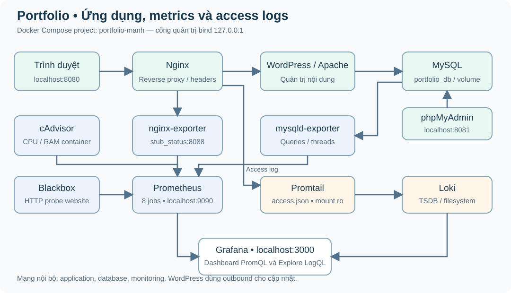
Chi tiết từng yêu cầu, hiện trạng, lỗi và xử lý: docs/audit.md.
Tiếp tục WordPress 7.1.2, PHP 8.3.35/Apache và theme Twenty Twenty-Five quan sát từ container. Image WordPress được khóa theo digest hiện có để tránh thay đổi ứng dụng ngoài phạm vi khi recreate.
Website cung cấp giới thiệu trên Trang chủ, Kỹ năng, Dự án và Liên hệ. Nội dung tiếp tục quản lý qua Trang trong wp-admin. Giữ theme và nội dung cá nhân; mật khẩu user quản trị đã được đổi theo yêu cầu người dùng.
docker compose config --quiet docker compose up -d --wait --wait-timeout 180 curl.exe --max-time 15 -I http://localhost:8080/ curl.exe --max-time 15 -I http://localhost:8080/wp-login.php
Website trả HTTP 200. Đã đăng nhập thật bằng vanmanh_admin, truy cập Dashboard và danh sách Trang. Ngày 08/10/2026 lúc 15:21, bộ kiểm thử tạo một trang nháp riêng, sửa nội dung rồi xuất bản qua WordPress REST API trong phiên quản trị đã xác thực. Truy cập HTTP ẩn danh trả 200 và hiển thị đúng tiêu đề, nội dung mới; sau đó trang thử cùng revision được xóa. Đối chiếu trước/sau xác nhận toàn bộ posts/pages gốc, postmeta và cấu hình cá nhân không thay đổi; xem evidence/wordpress-edit.json.
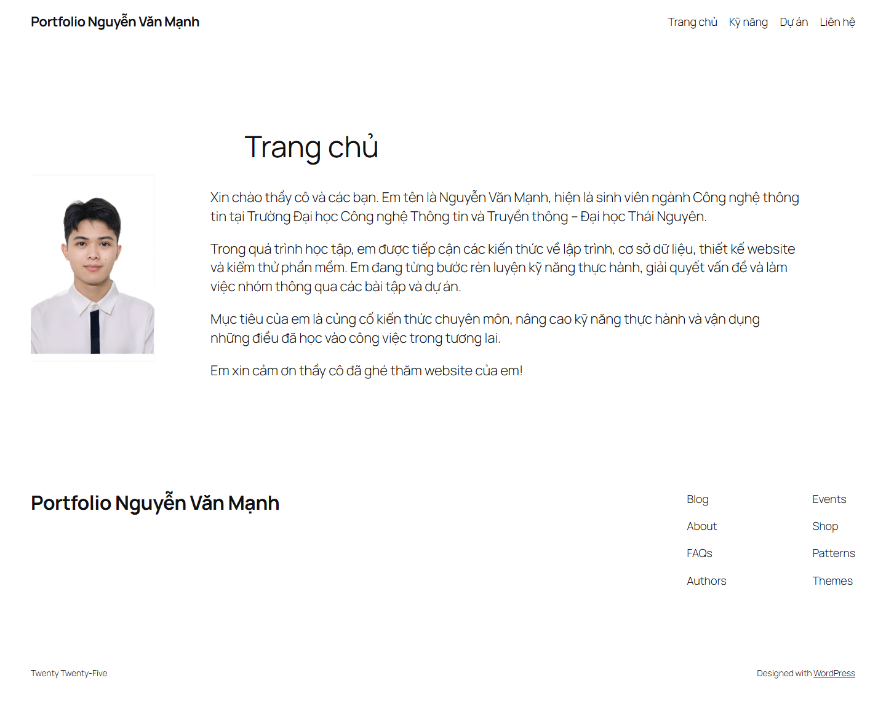
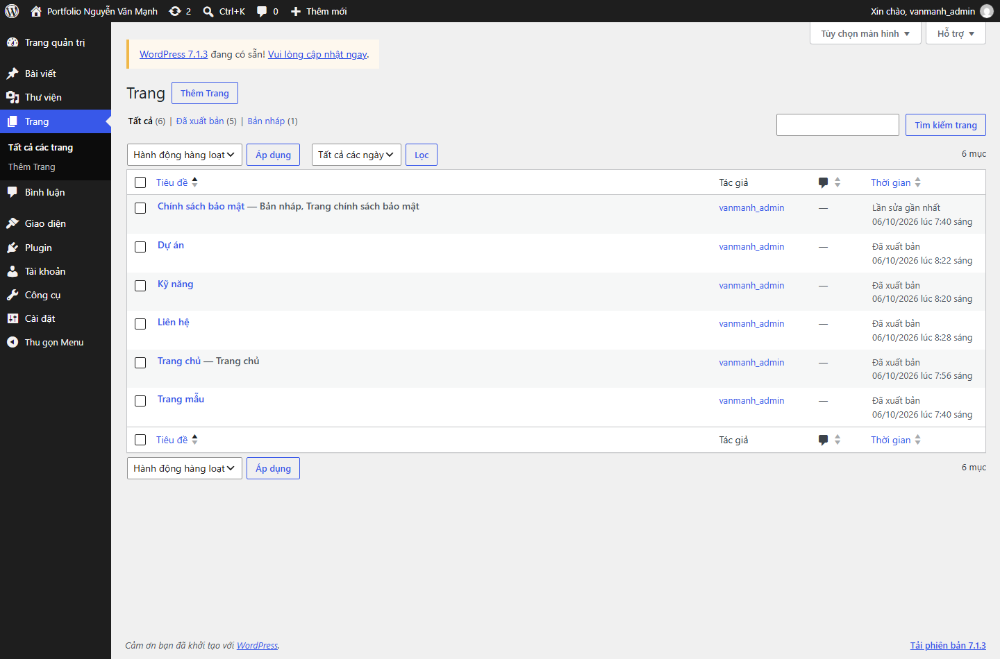
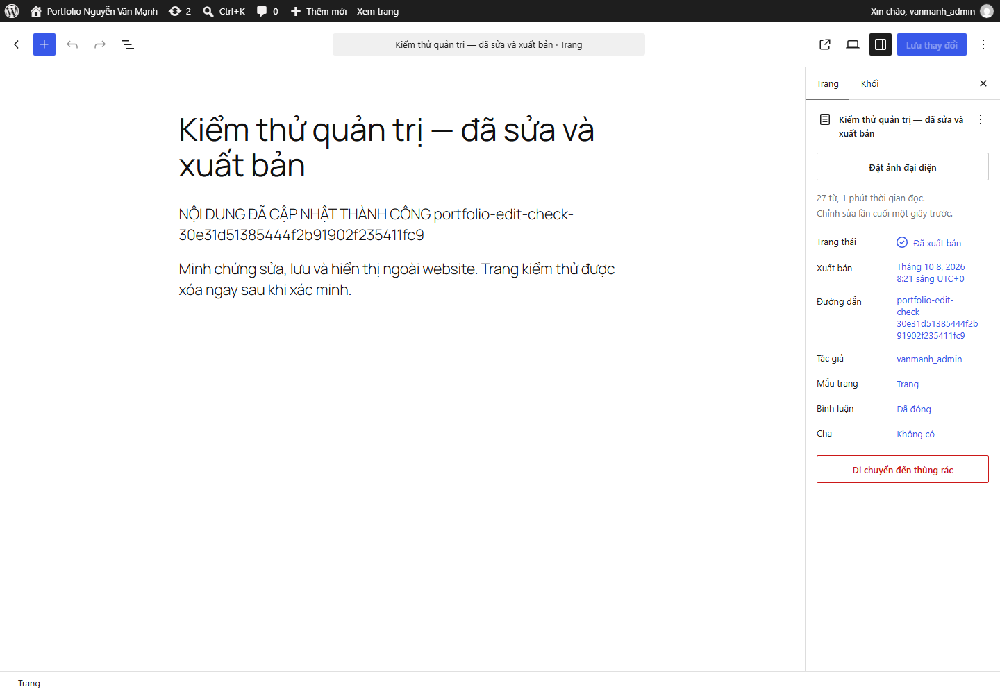
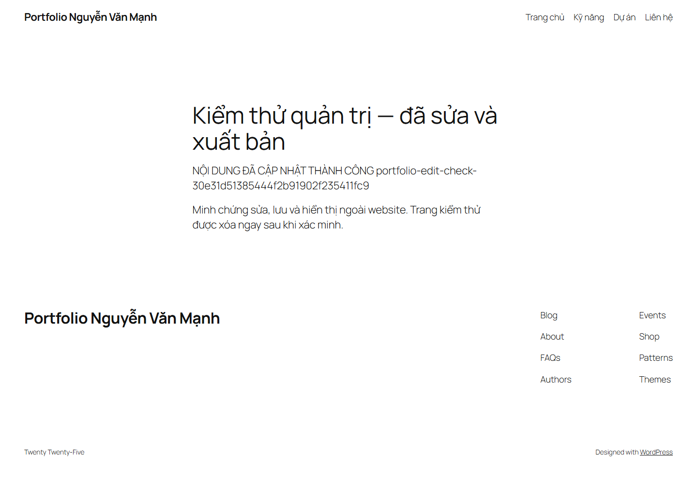
Source bổ sung: wordpress/portfolio-export.xml, wordpress/uploads và MU plugin portfolio-hardening.php. WXR là bản xuất nội dung, không thay cho backup đầy đủ database.
MySQL 8.4 lưu database portfolio_db trong volume portfolio-manh_db_data. Tài khoản ứng dụng portfolio_user có quyền trên schema portfolio_db và không có global privileges ngoài USAGE.
phpMyAdmin chỉ truy cập localhost:8081, kết nối server db:3306; PMA_ARBITRARY=0. Đăng nhập bằng MYSQL_USER/MYSQL_PASSWORD trong .env, không đưa password hoặc wp_users hash vào hình báo cáo.
Mật khẩu MySQL user, MySQL root và Grafana đã được đổi theo yêu cầu người dùng sang ba giá trị ngẫu nhiên riêng biệt dài 48 ký tự, đạt mức tối thiểu 20 ký tự. Cấu hình và dịch vụ được đồng bộ; WordPress admin giữ mật khẩu hiện có. Không đưa giá trị mật khẩu vào báo cáo. Xem evidence/credential-hardening.json.
-- Trong phpMyAdmin sau đăng nhập: SHOW GRANTS FOR CURRENT_USER(); SHOW TABLES; SELECT ID, post_title, post_status FROM wp_posts WHERE post_type = 'page';
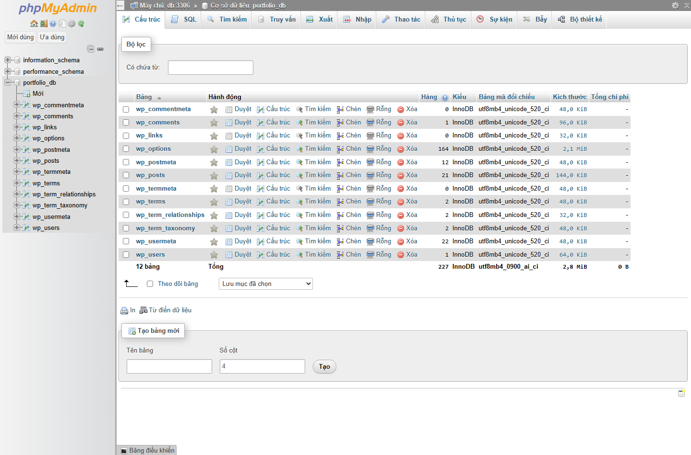
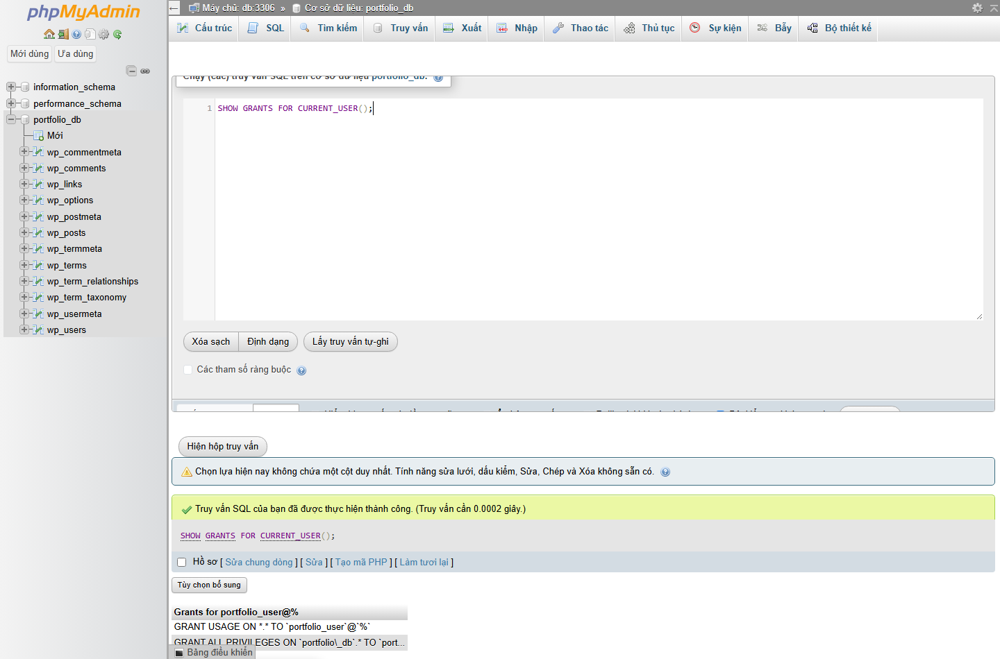
Lỗi root 1045 trước đây đã được xử lý. Root đăng nhập thực tế thành công; MySQL đã trở lại xác thực bình thường và giữ volume cũ. Root tiếp tục được đổi sang mật khẩu ngẫu nhiên 48 ký tự bằng ALTER USER qua phiên xác thực bình thường, sau khi sao lưu đầy đủ và khôi phục thử cả dữ liệu ứng dụng lẫn account metadata thành công. Xem evidence/root-maintenance.json và evidence/local-root-auth.json.
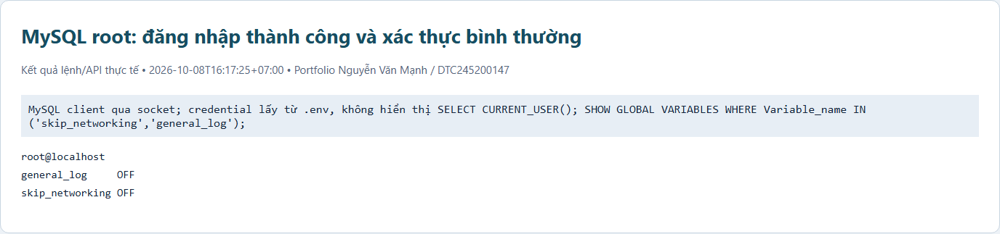
Snapshot ứng dụng được tạo bằng portfolio_user đủ quyền trên schema, khôi phục thử trên MySQL cùng image với tmpfs/network none: đủ 12 bảng, chữ ký INSERT khớp và CHECK TABLE OK. Không gắn volume gốc vào container thử. Đây là backup ứng dụng. Trong lần xử lý root, đã lưu thêm archive toàn bộ volume khi database dừng sạch, so sánh với dữ liệu nguồn, kiểm tra checksums và lưu full SQL dump gồm system accounts.
Nginx nhận HTTP trên localhost:8080, chuyển đến wordpress:80, giữ Host và đặt X-Real-IP/X-Forwarded-For/X-Forwarded-Proto. Các forwarding headers từ client bị thay bằng giá trị proxy đáng tin cậy.
| Header | Tác dụng |
|---|---|
| X-Content-Type-Options: nosniff | Hạn chế đoán MIME type. |
| X-Frame-Options: SAMEORIGIN | Hạn chế nhúng trang vào iframe ngoài origin. |
| Referrer-Policy | Giảm thông tin URL gửi qua referrer khi khác origin. |
| Permissions-Policy | Tắt camera, microphone, geolocation không cần cho portfolio. |
| Content-Security-Policy | Hạn chế frame-ancestors/object/base URI mà vẫn tương thích WordPress hiện có. |
Headers dùng always, áp dụng cả phản hồi lỗi. Server tokens/PHP header bị ẩn. Chặn xmlrpc.php bằng 403, hidden files và wp-config.php bằng 404.
Listener stub_status:8088 chỉ có trong Docker network, không publish ra Windows; nginx-exporter đọc requests và connections tại đây. Không gọi probe HTTP là metrics Nginx.
docker compose exec -T nginx nginx -t curl.exe --max-time 15 -I http://localhost:8080/
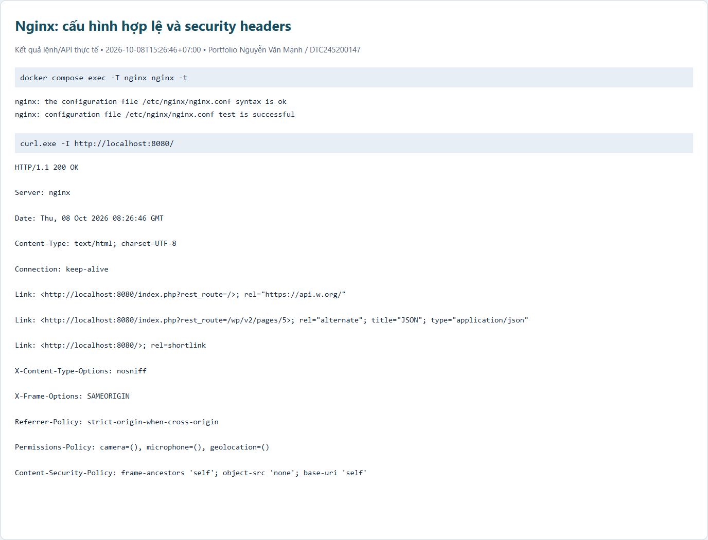
Chưa cấu hình HTTPS tự ký. Hệ thống hiện dùng HTTP và security headers cơ bản; cần đối chiếu phiếu đề bài gốc để xác nhận lựa chọn triển khai được chấp nhận.
Prometheus scrape mỗi 15 giây. Tám jobs gồm prometheus, cadvisor, nginx, mysql, portfolio_http, blackbox, loki và promtail. Các targets và các metrics thực đã được kiểm tra bằng API; xem evidence/verification.json.
| Nhóm | Nguồn | Metrics/panels |
|---|---|---|
| Container | cAdvisor 0.56.2 | CPU usage rate, working set RAM theo Compose service. |
| Web server | nginx-exporter 1.4.2 + stub_status | nginx_http_requests_total, connections_active. |
| Database | mysqld-exporter 0.17.2 | global_status queries, threads_connected; chỉ collectors cơ bản. |
| Website availability | Blackbox HTTP probe | probe_success, probe_duration_seconds; không thay cho web server metrics. |
Grafana provision hai datasources và hai dashboards từ repository. Dashboard infrastructure nhóm container/web/database và probe riêng. CPU/RAM lọc đúng project portfolio-manh; không dùng dữ liệu container bài khác làm minh chứng.
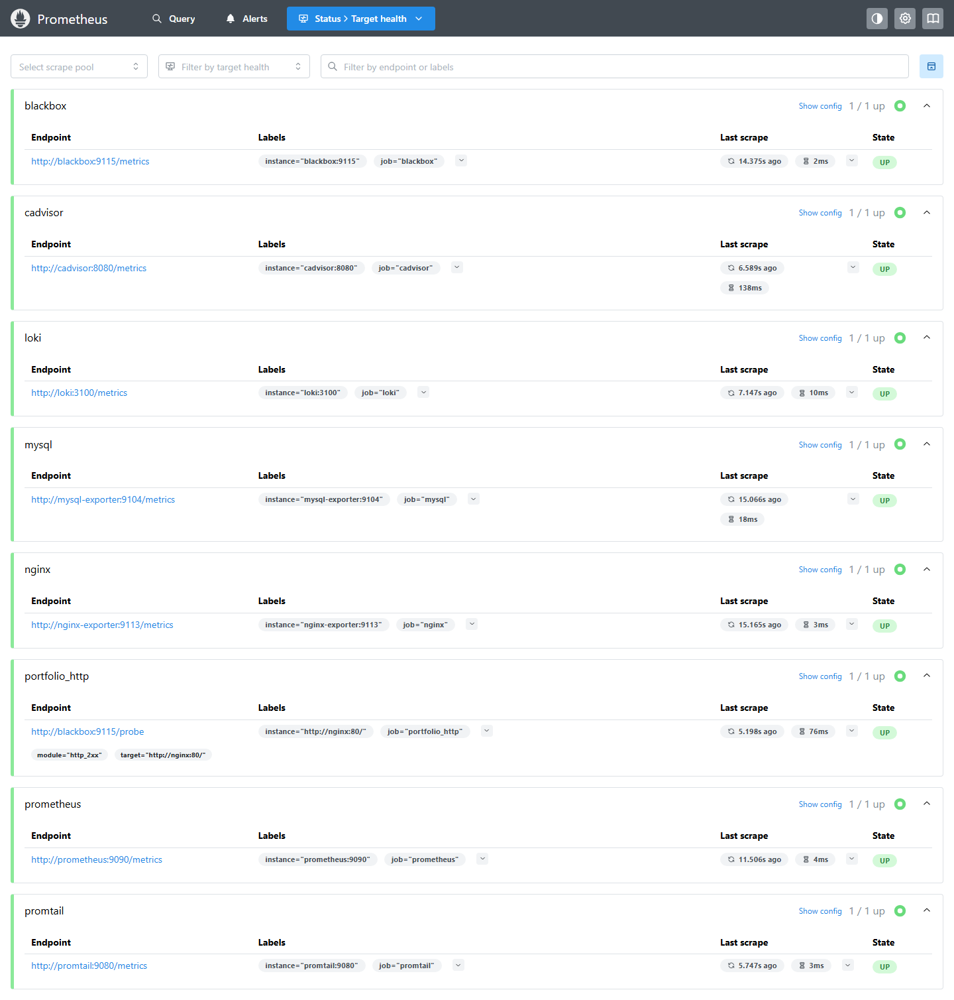
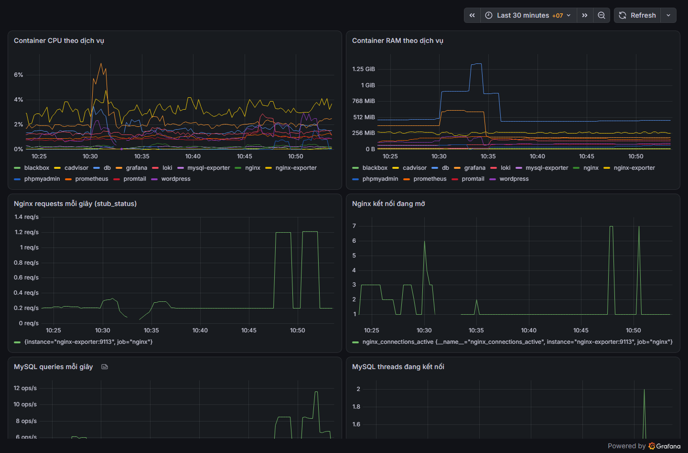
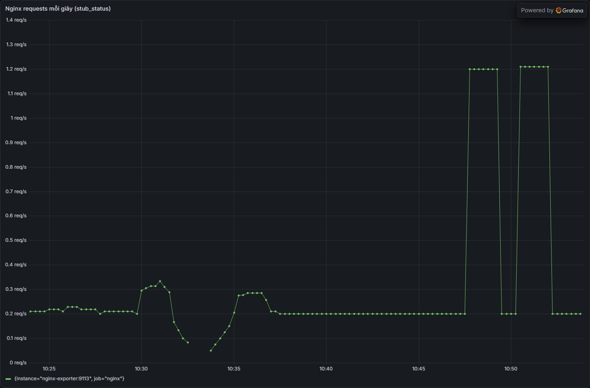
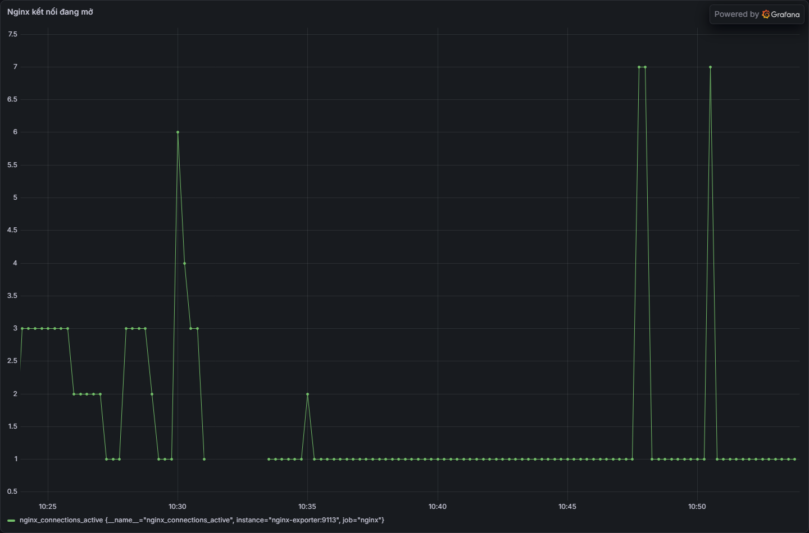
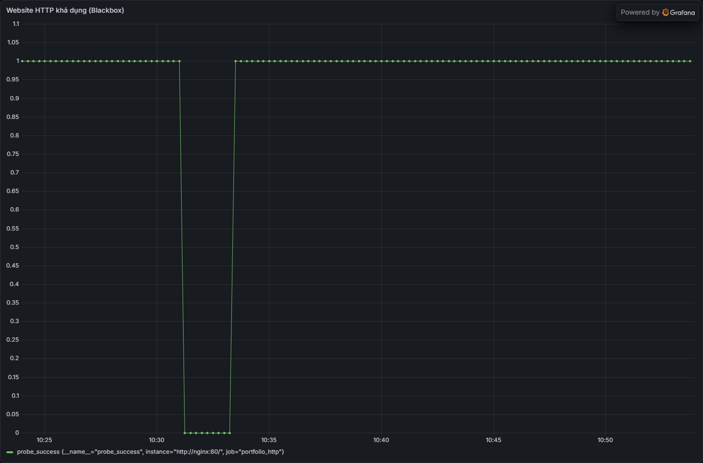
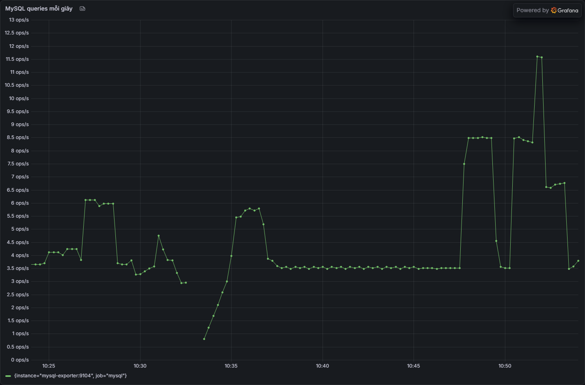
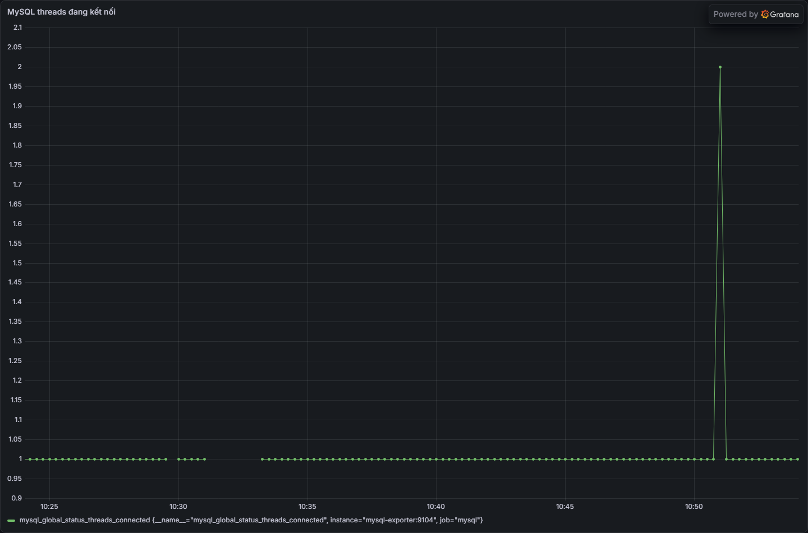
cAdvisor phiên bản mới đã đăng ký Docker factory thành công với Engine 29.8.1; không lấy “target UP” làm bằng chứng duy nhất cho việc có metrics container.
Nginx ghi access.json vào shared named volume; Promtail 3.5.0 chạy user 10001, mount logs read-only, lưu positions riêng. Loki 3.6.0 dùng schema TSDB v13 hiện có; không xóa log hoặc thay schema lịch sử.
Labels thực: project=portfolio-manh, job=nginx-access, service=nginx. Dòng JSON có timestamp, method, uri, numeric status, bytes và request_time. Query strings, cookies và Authorization không ghi vào access log.
{project="portfolio-manh",job="nginx-access"} | json
{project="portfolio-manh",job="nginx-access"}
| json | __error__="" | status >= 400 | status < 600
sum(count_over_time(
{project="portfolio-manh",job="nginx-access"}[1m]
))
Đã tạo request HTTP thực: /xmlrpc.php trả 403, /.env trả 404, website trả 200. Cả ba truy vấn trả dữ liệu thực. Không cố làm hỏng upstream để tạo 5xx; truy vấn lọc được cả 4xx và 5xx theo numeric status.
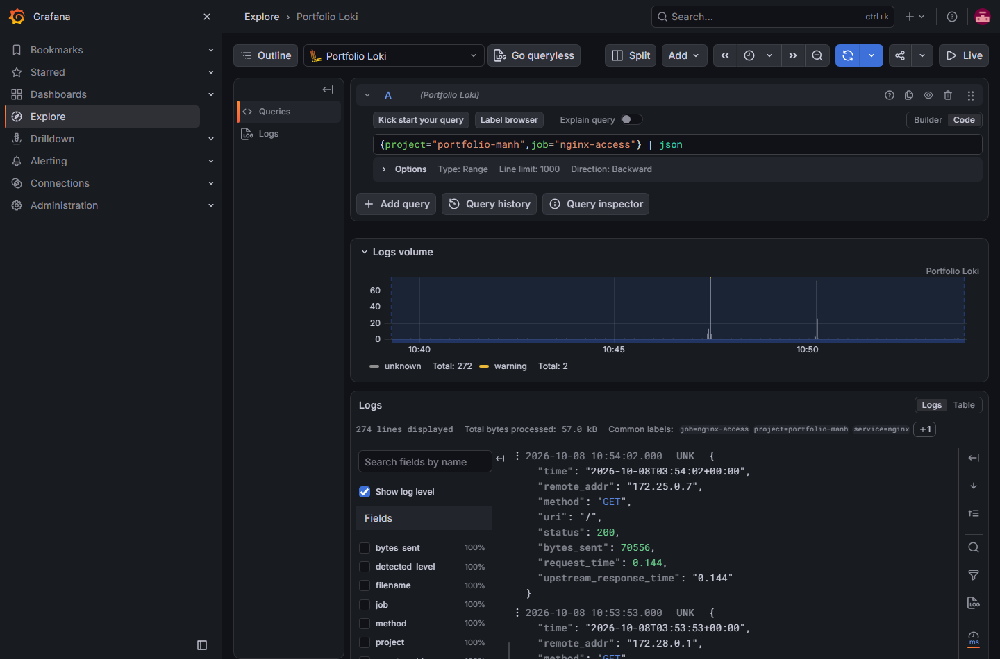
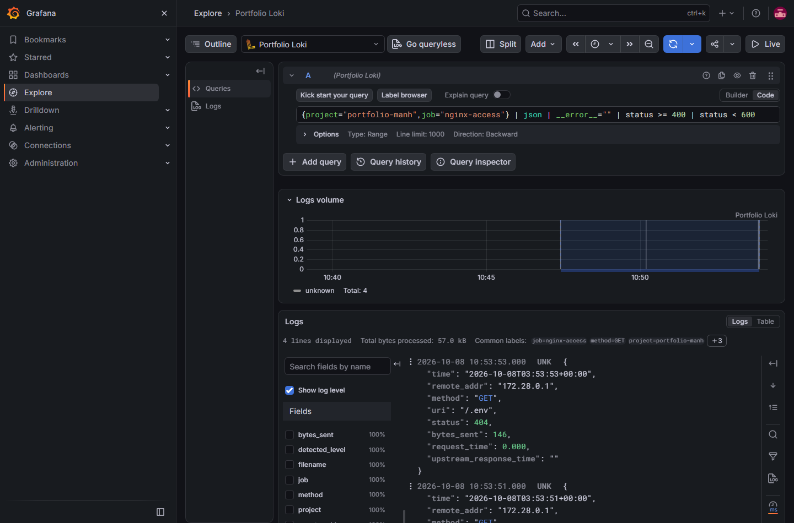
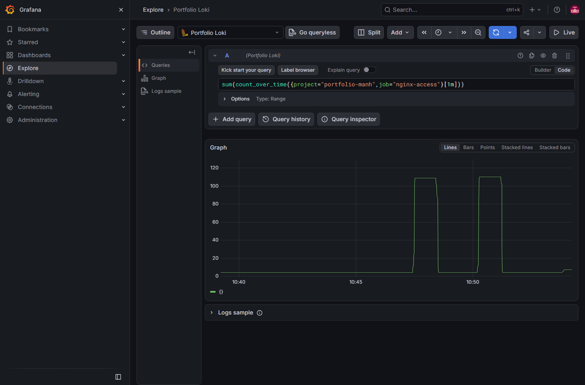
Promtail EOL ngày 02/03/2026 theo Grafana. Vẫn giữ đúng công cụ theo đề. Alloy cũ được dừng và giữ volume/profile, không tự thay Promtail bằng Alloy.
| Biện pháp | Triển khai và cách kiểm tra |
|---|---|
| Tách network | application/database/monitoring Internal=true; network inspect. |
| Cổng localhost | 8080/8081/3000/9090 bind 127.0.0.1; không publish database/Loki/exporters; Compose ps/inspect. |
| Security headers | Năm headers Nginx, always; curl -I trên 200 và lỗi HTTP. |
| Quyền DB | Ứng dụng chỉ trên schema portfolio_db; SHOW GRANTS. Exporter cơ bản không cần root/global grant. |
| Mật khẩu | MySQL user/root và Grafana dùng ba mật khẩu ngẫu nhiên riêng biệt dài 48 ký tự, đạt mức tối thiểu 20 ký tự. .env bị Git ignore; root và dịch vụ đã xác thực thành công. |
| Non-root | Grafana 472, Loki/Promtail 10001, exporters/Prometheus/Blackbox 65534; inspect Config.User. |
| Container permissions | no-new-privileges, drop ALL/read-only trên dịch vụ hỗ trợ; config mount ro. |
| WordPress | Tắt file editor PHP/XML-RPC, chặn hidden files; vẫn cho phép chỉnh nội dung pages. |
Ngoại lệ có chủ đích: MySQL/Apache/Nginx dùng entrypoint mặc định tương thích; không ép read-only/non-root làm dịch vụ lỗi. cAdvisor root+privileged để đọc VM/cgroups, không publish cổng; loki-init root chạy một lần chuẩn bị quyền rồi exit.
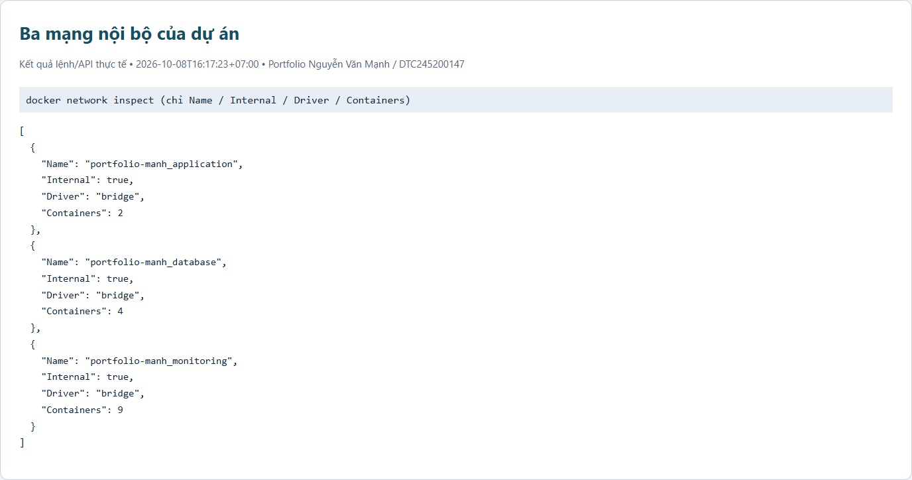
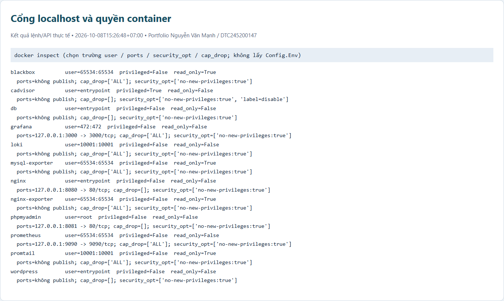
Không gọi mount docker.sock:ro là kiểm soát read-only Docker API. Cần đánh giá bổ sung nếu triển khai production ngoài máy học tập.
Nguồn kết quả: evidence/verification.json do scripts/verify.py chạy trực tiếp trên stack lúc 2026-10-08T16:14:55.498676+07:00; đạt 40/40 kiểm tra. Cả ba kiểm tra độ dài MYSQL_PASSWORD, MYSQL_ROOT_PASSWORD và GRAFANA_ADMIN_PASSWORD đã đạt với 48 ký tự, cùng các kiểm tra đăng nhập và chức năng dịch vụ. Các kiểm tra gốc được giữ nguyên; không hạ mức tối thiểu 20 ký tự. Kiểm thử bổ sung sửa/lưu WordPress lúc 15:21 đạt 13/13 kiểm tra, ghi riêng trong evidence/wordpress-edit.json.
| Kiểm thử | Kết quả đã xác minh / điều kiện |
|---|---|
| Compose/Nginx/Prometheus/Loki/Promtail syntax | Đã kiểm tra bằng config/check syntax tools. |
| Website và trang đăng nhập | HTTP 200, giữ tên/nội dung; đã kiểm tra riêng phiên đăng nhập admin thật. |
| Sửa/lưu WordPress | Tạo draft riêng, sửa và publish qua REST/session; truy cập ẩn danh hiển thị nội dung mới. Đã xóa trang thử và xác minh dữ liệu gốc giữ nguyên. |
| phpMyAdmin/database | Trang hoạt động; kết quả đăng nhập và database access xem JSON mới nhất. |
| Metrics | 8 targets UP; nginx_up/mysql_up/probe_success=1; CPU/RAM/Nginx/MySQL có series thật. |
| Grafana | Hai datasource health OK; hai dashboards meta.provisioned=true. |
| LogQL | Cả ba query trả dữ liệu thực, gồm request 403/404. |
| Network/ports/passwords | Internal networks, localhost mappings và ba mật khẩu cấu hình dài 48 ký tự đều đạt. |
| Root MySQL | Root đăng nhập thành công bằng credential cấu hình; giữ nguyên volume dữ liệu. |
Sao lưu ứng dụng đã restore-verify: 12 bảng, dữ liệu khớp, CHECK TABLE OK; evidence/backup-validation.json. Phiên admin xác thực Dashboard/danh sách Trang qua HTTP thật; kiểm thử bổ sung xác nhận chuỗi tạo nháp → sửa/lưu → xuất bản → hiển thị công khai → dọn trang thử.
python -u scripts/verify.py python scripts/test-wordpress-edit.py --capture docker compose ps -a git check-ignore .env backups/before-changes.sql
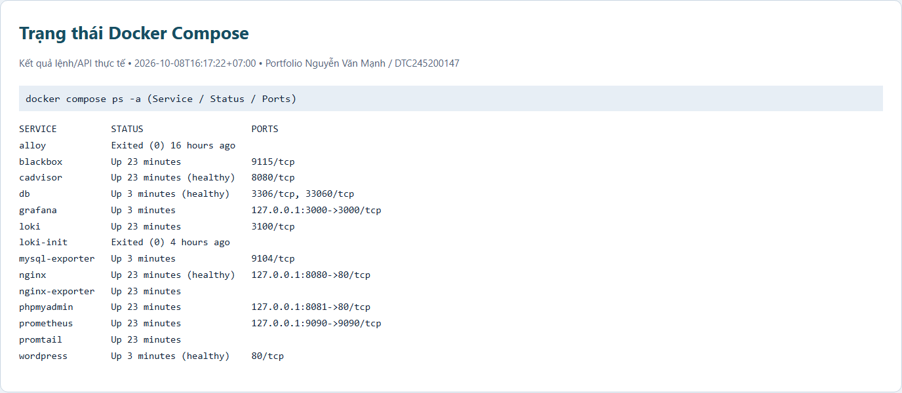
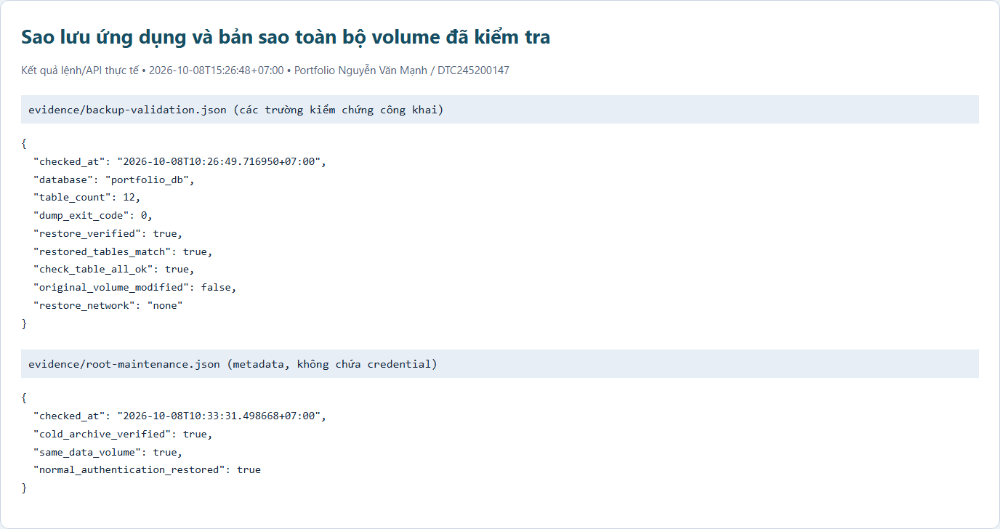
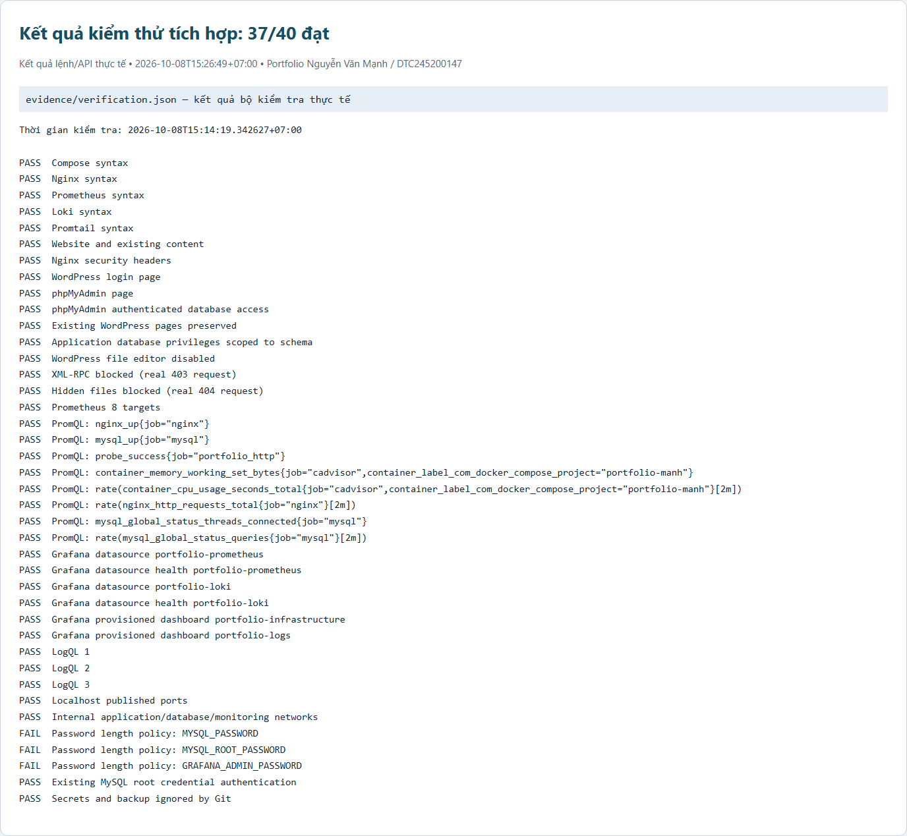
Hai ảnh WordPress ở phần 3 được chụp bằng Edge trong phiên quản trị và phiên ẩn danh riêng. Thao tác ghi nội dung của bộ kiểm thử dùng WordPress REST API với cookie phiên và wp_rest nonce; ảnh editor ghi trạng thái đã lưu/xuất bản. Cookies, nonce và mật khẩu không lưu vào artifacts công khai.
Nhánh main đã có ít nhất ba commits với nội dung thực, không sửa hoặc giả lập lịch sử. Remote origin trỏ tới repository thuộc tài khoản NguyenVanManh147. Snapshot lúc 15:31 ngày 08/10/2026 ghi nhận bốn commits dưới đây đã push; commit local và remote cùng là 7d27e84. Kết quả có trong evidence/git-delivery.json; các commits minh chứng cuối có thể được bổ sung sau snapshot.
| Commit | Nội dung thay đổi |
|---|---|
e5aea3b | Khôi phục source portfolio WordPress, Compose và triển khai Nginx. |
ce4c524 | Provision Prometheus/Grafana, dashboards và Loki/Promtail tập trung logs. |
f1619e4 | Thêm khởi tạo có thể lặp lại, sao lưu/kiểm tra và workflow sửa/lưu quản trị đã kiểm chứng. |
7d27e84 | Hoàn thiện báo cáo học phần, PDF và minh chứng triển khai đã xác minh. |
git status --short git diff --cached --stat git log --oneline --graph --decorate git remote -v
Sinh viên xác nhận tài khoản NguyenVanManh147. Repository bài là NguyenVanManh147/DTC245200147_NguyenVanManh; tên repository chứa mã sinh viên và họ tên. Việc tạo repository và quyền ghi được xác minh trong evidence/github-access.json; việc push và đối chiếu commit local/remote được xác minh trong evidence/git-delivery.json. Ảnh dưới chụp tài khoản và repository sau khi push source.
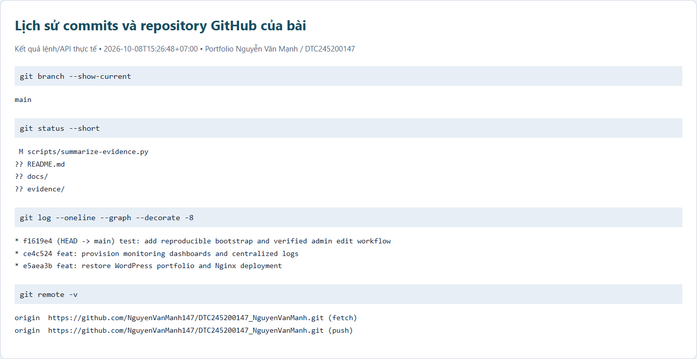
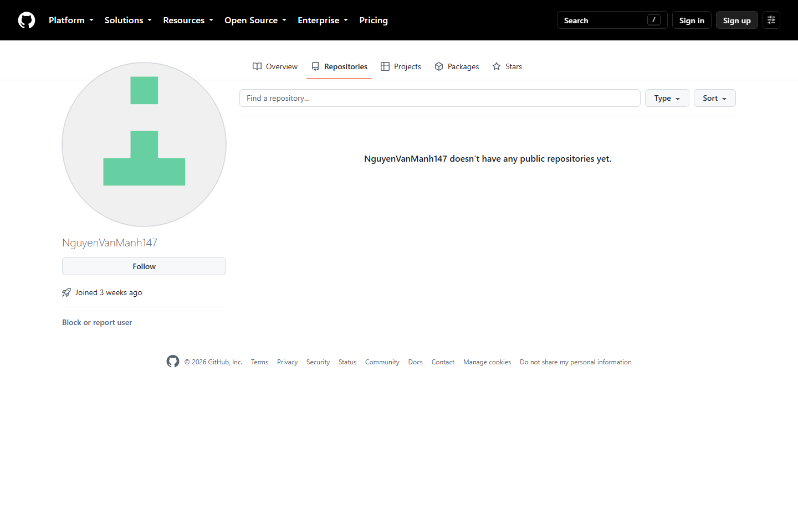
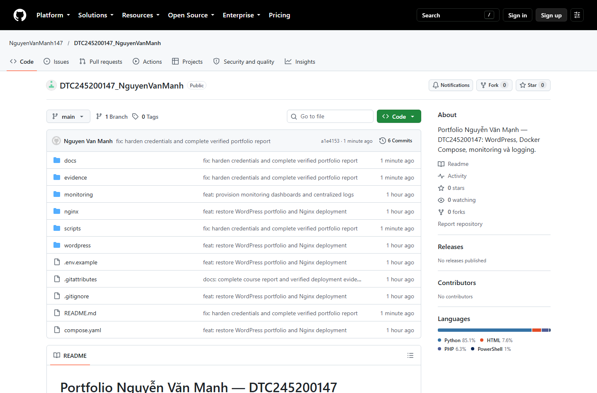
Danh sách ảnh đầy đủ nằm ở evidence/README.md. Gắn caption, đánh số hình và ghi thời gian chụp. Không đưa .env, SQL backup, credential cũ, cookies hoặc password hashes vào Git/báo cáo.
Ảnh backup đã được chèn ở phần kiểm thử; ảnh root authentication đã được chèn ở phần MySQL. File evidence/screenshots.json lưu nguồn, thời gian và SHA-256 của các ảnh. Các hình kết quả lệnh là trang hiển thị output thực tế, không phải ảnh terminal của Windows.
Cấu hình ứng dụng WordPress hiện có được khôi phục và hệ thống được bổ sung metrics container/web/database, provisioning Grafana, log access Nginx qua Loki/Promtail và các biện pháp hardening tương thích.
Các thay đổi được kiểm tra qua cấu hình, HTTP/API, Docker runtime và ảnh giao diện. Bản sao lưu ứng dụng được khôi phục trên MySQL cô lập, đối chiếu 12 bảng và chữ ký dữ liệu; cách này kiểm tra khả năng khôi phục thay vì chỉ xác nhận tồn tại file SQL.
Kiến trúc tách ứng dụng, database và monitoring giúp mô tả rõ luồng dữ liệu và phạm vi truy cập. Nginx là điểm vào của website; các giao diện quản trị giới hạn trên localhost. Metrics container, Nginx và MySQL lấy từ exporter thực, trong khi Blackbox kiểm tra khả dụng HTTP riêng. Loki/Promtail đưa access logs vào Grafana với ba truy vấn có kết quả kiểm chứng.
Hai điểm vận hành được làm rõ bằng kiểm thử: HTTP 200 ở trang đăng nhập không chứng minh đã xác thực quản trị; biến mật khẩu trong .env không tự đổi tài khoản đã lưu trong volume MySQL hoặc Grafana. Vì vậy phiên đăng nhập, credential dịch vụ và dữ liệu sao lưu được kiểm tra riêng.
HTTP với security headers, chưa TLS; MySQL exporter chỉ collectors cơ bản; cAdvisor cần đặc quyền; Nginx file logs chưa có rotation tự động. Promtail đã EOL nhưng được giữ theo checklist hiện có. Nếu sử dụng ngoài môi trường học tập, hướng phát triển là HTTPS, quản lý quyền collector, xoay file logs và chuyển sang collector còn được hỗ trợ sau khi thống nhất yêu cầu.
Phần đánh giá trên phản ánh artifacts kỹ thuật đã kiểm tra. Nhận xét trải nghiệm học tập cá nhân cần do sinh viên bổ sung nếu học phần yêu cầu.